Este relatório examina relações entre métricas de processo (popularidade, maturidade, atividade e tamanho) e métricas estruturais de qualidade (CBO, DIT e LCOM) em projetos Java open source. Os dados foram extraídos de repositórios no GitHub e processados pela suíte CK. Para avaliar associações monotônicas em distribuições assimétricas, adotou-se o coeficiente de Spearman com nível de significância de 5%. A apresentação dos resultados foi organizada por questões de pesquisa (RQ01-RQ04), de modo que cada questão contenha seus gráficos, explicações dos termos e uma discussão crítica dos problemas observados.
A literatura de engenharia de software sugere que crescimento de base de código e evolução prolongada tendem a pressionar modularidade e coesão. Este estudo testa, de forma empírica, se variáveis de processo de projetos open source se associam a atributos internos de qualidade arquitetural.
As seguintes hipóteses formais foram estabelecidas a priori:
O pipeline foi automatizado para permitir rastreabilidade e reprodutibilidade experimental.
A amostra final contém 825 repositórios com dados válidos para todas as variáveis analisadas.
| Métrica | Média | Mediana | Desvio Padrão | Mínimo | Máximo |
|---|---|---|---|---|---|
| Stars | 7492.6048 | 5339.0000 | 6238.8502 | 3468.0000 | 76480.0000 |
| Maturidade (Anos) | 10.1605 | 10.3110 | 3.0778 | 0.5500 | 17.4620 |
| Releases | 38.2267 | 11.0000 | 79.2649 | 0.0000 | 1000.0000 |
| Tamanho (LOC) | 104067.6800 | 16693.0000 | 305983.7292 | 2.0000 | 4845818.0000 |
| Métrica | Média | Mediana | Desvio Padrão | Mínimo | Máximo |
|---|---|---|---|---|---|
| CBO (Acoplamento) | 5.4840 | 5.3279 | 2.1820 | 0.0000 | 21.8935 |
| DIT (Prof. Herança) | 1.4558 | 1.3882 | 0.3428 | 1.0000 | 4.3880 |
| LCOM (Falta de Coesão) | 126.0650 | 22.6585 | 1888.9709 | 0.0000 | 54025.1128 |
A tabela a seguir sintetiza todos os pares avaliados entre variáveis de processo e métricas de qualidade.
| Vetor Independente X | Vetor Dependente Y | Spearman (ρ) | p-value | Significância (α < 0.05) |
|---|---|---|---|---|
| Popularidade (Stars) | CBO (Acoplamento) | 0.0346 | 3.2107e-01 | Não |
| Popularidade (Stars) | DIT (Prof. Herança) | -0.0075 | 8.2958e-01 | Não |
| Popularidade (Stars) | LCOM (Falta de Coesão) | -0.0245 | 4.8254e-01 | Não |
| Maturidade (Anos) | CBO (Acoplamento) | -0.0012 | 9.7147e-01 | Não |
| Maturidade (Anos) | DIT (Prof. Herança) | 0.2577 | 5.5875e-14 | Sim |
| Maturidade (Anos) | LCOM (Falta de Coesão) | 0.1420 | 4.2780e-05 | Sim |
| Atividade (Releases) | CBO (Acoplamento) | 0.3599 | 1.2504e-26 | Sim |
| Atividade (Releases) | DIT (Prof. Herança) | 0.2257 | 5.4298e-11 | Sim |
| Atividade (Releases) | LCOM (Falta de Coesão) | 0.2530 | 1.6162e-13 | Sim |
| Tamanho (LOC) | CBO (Acoplamento) | 0.3684 | 6.3192e-28 | Sim |
| Tamanho (LOC) | DIT (Prof. Herança) | 0.3073 | 1.6972e-19 | Sim |
| Tamanho (LOC) | LCOM (Falta de Coesão) | 0.3534 | 1.1087e-25 | Sim |
Cada questão de pesquisa apresenta os gráficos correspondentes, interpretação estatística e uma dissertação sobre os problemas identificados no comportamento das métricas.
Hipótese operacional: H1: maior popularidade se associa a menor acoplamento e maior coesão.
Leitura dos gráficos: cada gráfico de dispersão representa a variável independente no eixo X e uma métrica CK no eixo Y. A inclinação visual e a dispersão dos pontos orientam a interpretação do sinal e da intensidade da associação monotônica.
| Variável X | Métrica Y | Spearman (ρ) | p-value | Significância |
|---|---|---|---|---|
| Popularidade (Stars) | CBO (Acoplamento) | 0.0346 | 3.2107e-01 | Não |
| Popularidade (Stars) | DIT (Prof. Herança) | -0.0075 | 8.2958e-01 | Não |
| Popularidade (Stars) | LCOM (Falta de Coesão) | -0.0245 | 4.8254e-01 | Não |
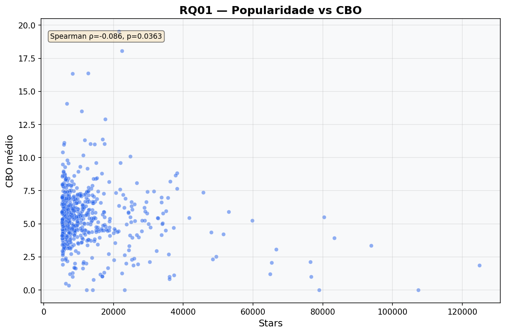
Figura RQ01-A. Stars vs CBO
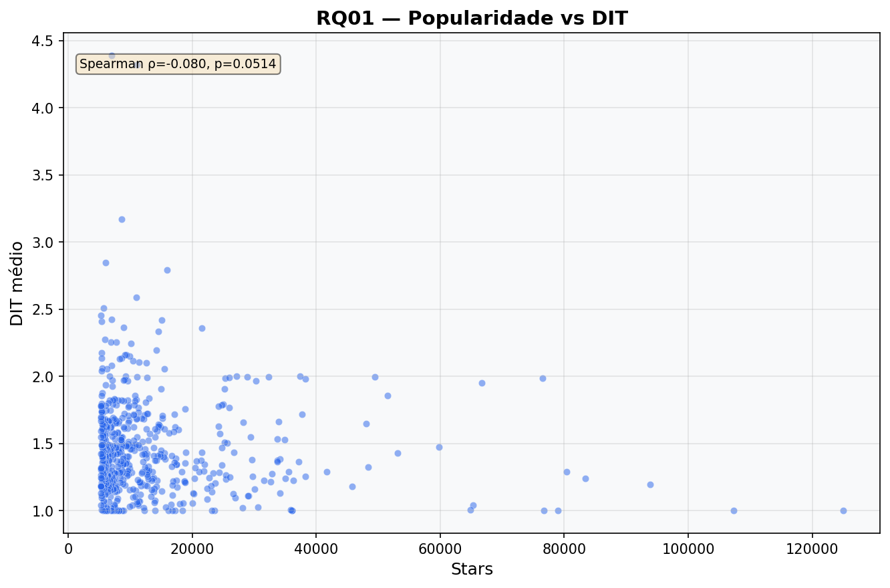
Figura RQ01-B. Stars vs DIT
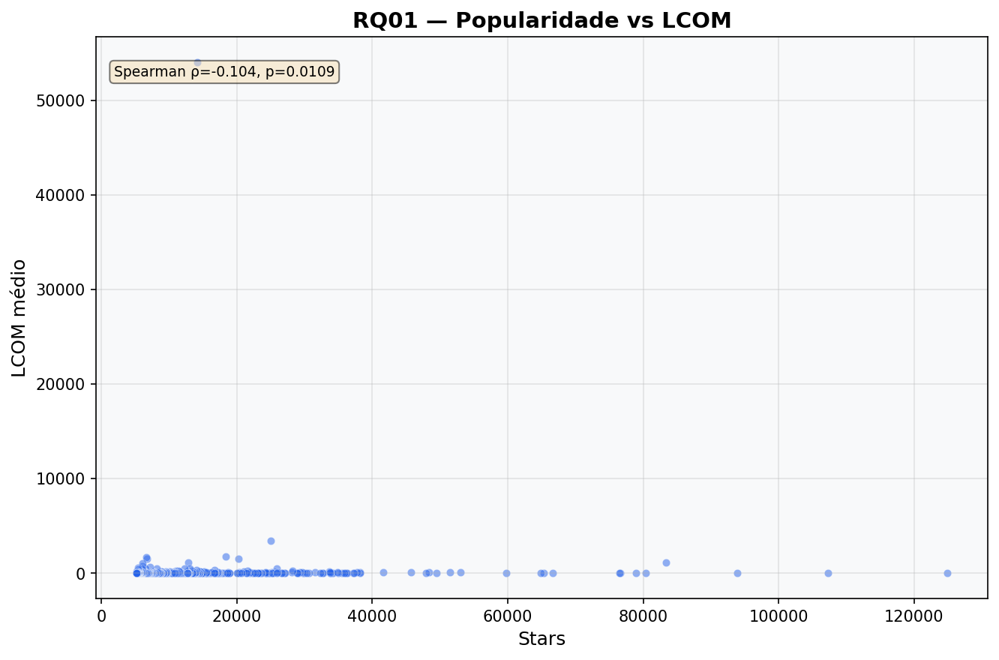
Figura RQ01-C. Stars vs LCOM
Nesta questão, não foram identificadas relações estatisticamente robustas. O principal problema analítico passa a ser o risco de inferência causal indevida: a ausência de associação significativa não implica ausência de efeito, podendo refletir heterogeneidade arquitetural entre domínios de aplicação.
Hipótese operacional: H2: o envelhecimento do projeto eleva complexidade estrutural e risco de dívida técnica.
Leitura dos gráficos: cada gráfico de dispersão representa a variável independente no eixo X e uma métrica CK no eixo Y. A inclinação visual e a dispersão dos pontos orientam a interpretação do sinal e da intensidade da associação monotônica.
| Variável X | Métrica Y | Spearman (ρ) | p-value | Significância |
|---|---|---|---|---|
| Maturidade (Anos) | CBO (Acoplamento) | -0.0012 | 9.7147e-01 | Não |
| Maturidade (Anos) | DIT (Prof. Herança) | 0.2577 | 5.5875e-14 | Sim |
| Maturidade (Anos) | LCOM (Falta de Coesão) | 0.1420 | 4.2780e-05 | Sim |
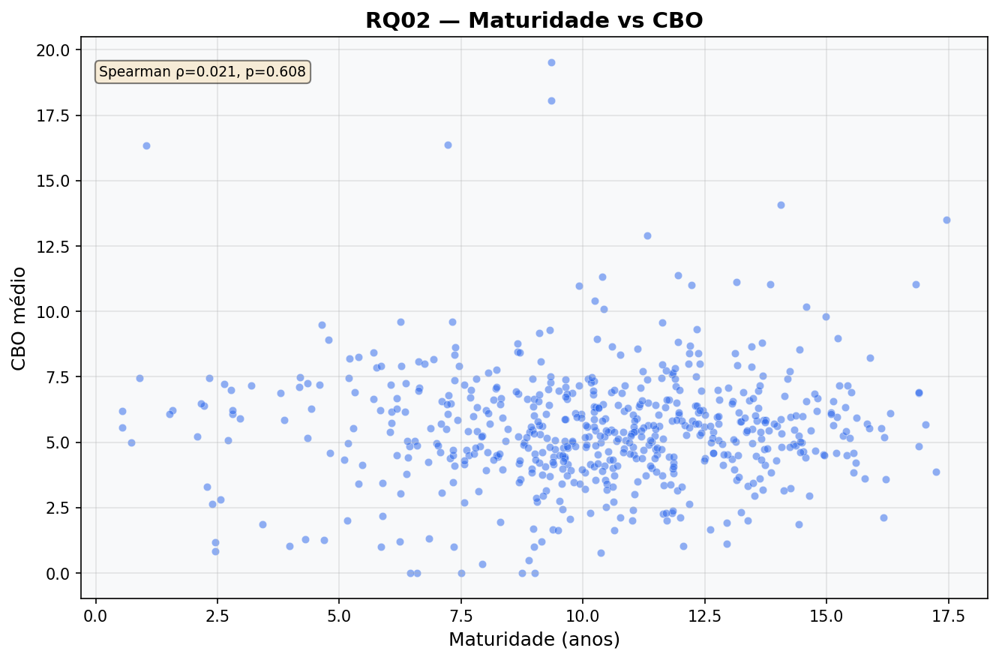
Figura RQ02-A. Maturidade vs CBO
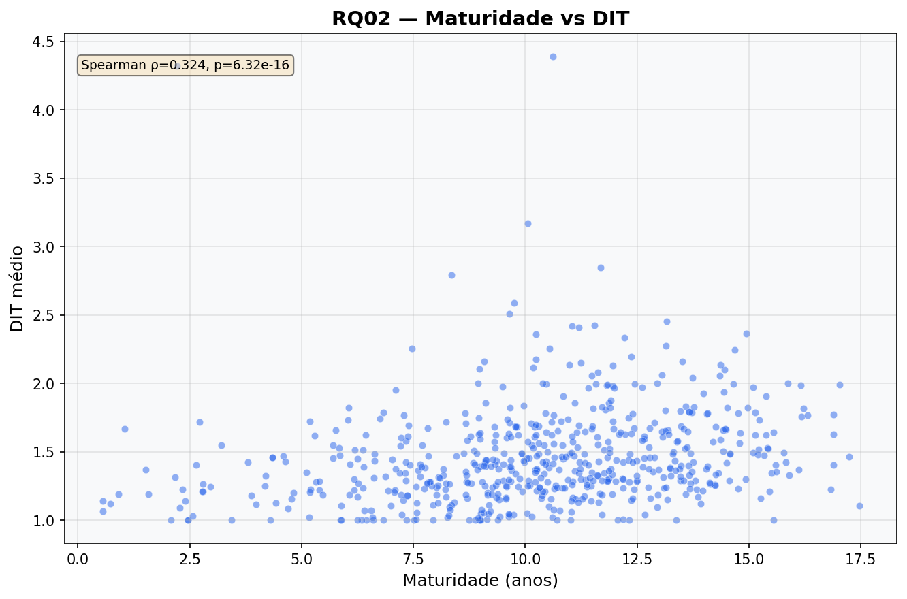
Figura RQ02-B. Maturidade vs DIT
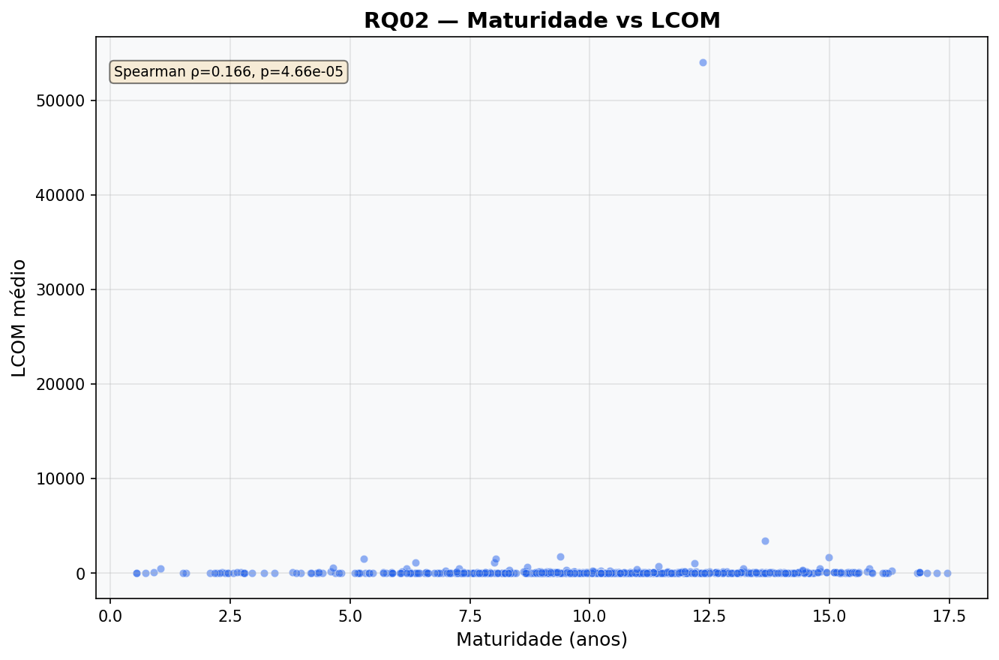
Figura RQ02-C. Maturidade vs LCOM
Problemas identificados para esta questão: profundidade excessiva da hierarquia de herança, ampliando custo cognitivo de manutenção; redução de coesão interna, com aumento de classes multifuncionais e maior dívida técnica. Em termos de engenharia, recomenda-se monitoramento contínuo de CK, inspeções de arquitetura e gatilhos de refatoração preventiva em pontos críticos.
Hipótese operacional: H3: maior frequência de releases exige modularidade para preservar qualidade interna.
Leitura dos gráficos: cada gráfico de dispersão representa a variável independente no eixo X e uma métrica CK no eixo Y. A inclinação visual e a dispersão dos pontos orientam a interpretação do sinal e da intensidade da associação monotônica.
| Variável X | Métrica Y | Spearman (ρ) | p-value | Significância |
|---|---|---|---|---|
| Atividade (Releases) | CBO (Acoplamento) | 0.3599 | 1.2504e-26 | Sim |
| Atividade (Releases) | DIT (Prof. Herança) | 0.2257 | 5.4298e-11 | Sim |
| Atividade (Releases) | LCOM (Falta de Coesão) | 0.2530 | 1.6162e-13 | Sim |
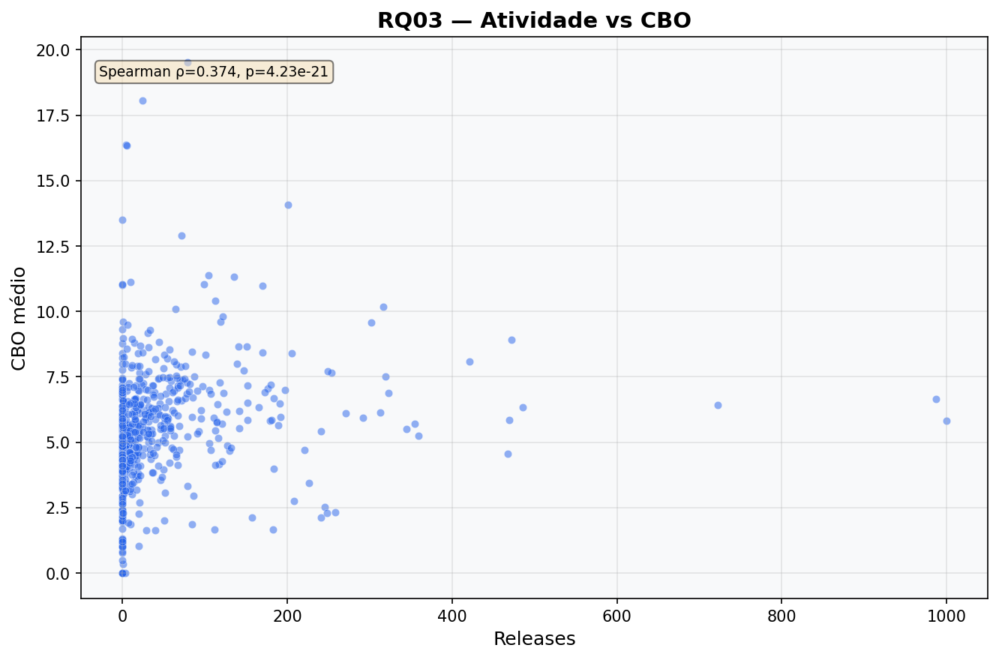
Figura RQ03-A. Releases vs CBO
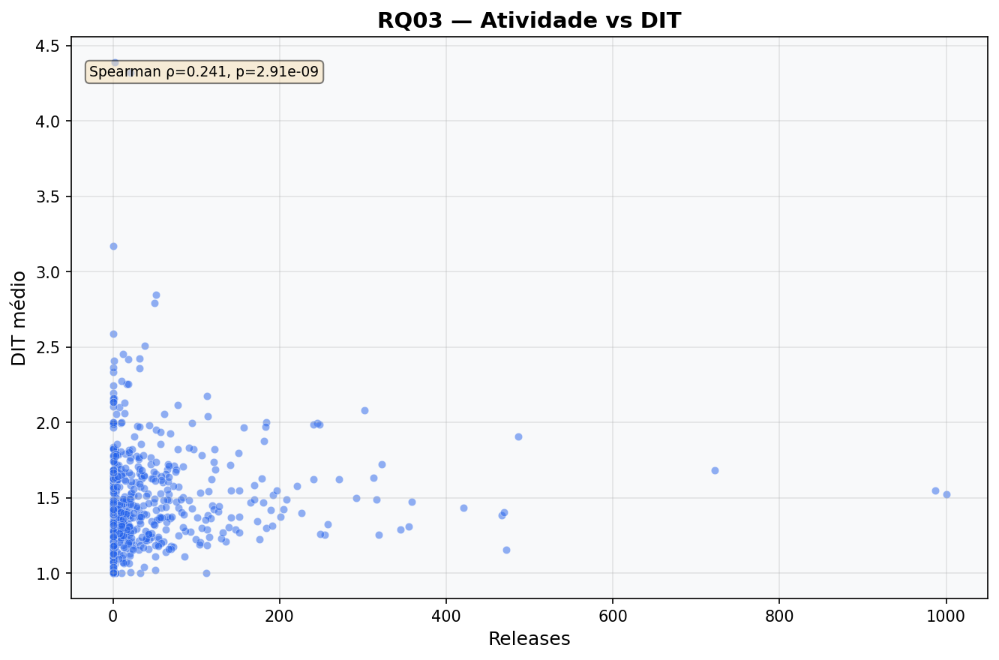
Figura RQ03-B. Releases vs DIT
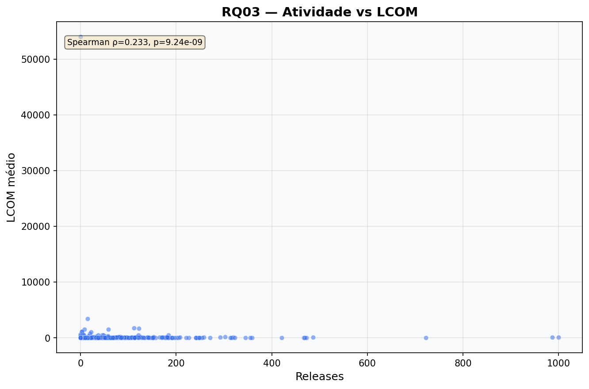
Figura RQ03-C. Releases vs LCOM
Problemas identificados para esta questão: elevação do acoplamento entre classes, dificultando evolução independente de módulos; profundidade excessiva da hierarquia de herança, ampliando custo cognitivo de manutenção; redução de coesão interna, com aumento de classes multifuncionais e maior dívida técnica. Em termos de engenharia, recomenda-se monitoramento contínuo de CK, inspeções de arquitetura e gatilhos de refatoração preventiva em pontos críticos.
Hipótese operacional: H4: crescimento de tamanho aumenta a interdependência entre classes e o custo de manutenção.
Leitura dos gráficos: cada gráfico de dispersão representa a variável independente no eixo X e uma métrica CK no eixo Y. A inclinação visual e a dispersão dos pontos orientam a interpretação do sinal e da intensidade da associação monotônica.
| Variável X | Métrica Y | Spearman (ρ) | p-value | Significância |
|---|---|---|---|---|
| Tamanho (LOC) | CBO (Acoplamento) | 0.3684 | 6.3192e-28 | Sim |
| Tamanho (LOC) | DIT (Prof. Herança) | 0.3073 | 1.6972e-19 | Sim |
| Tamanho (LOC) | LCOM (Falta de Coesão) | 0.3534 | 1.1087e-25 | Sim |
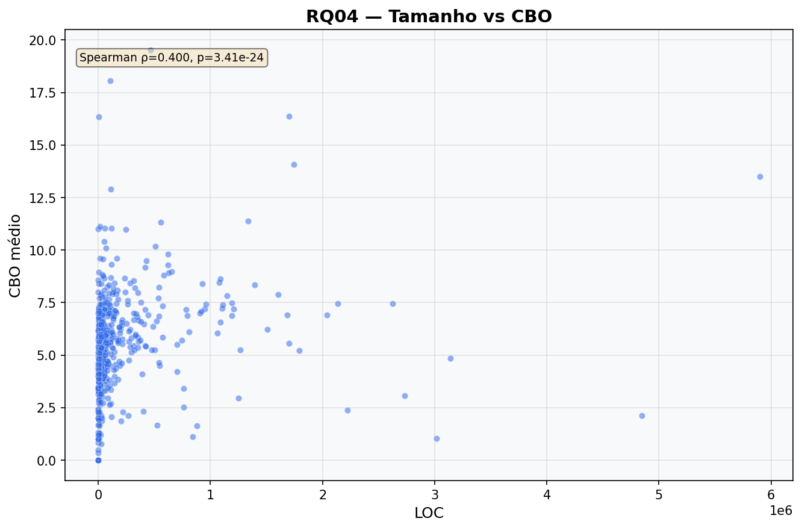
Figura RQ04-A. LOC vs CBO
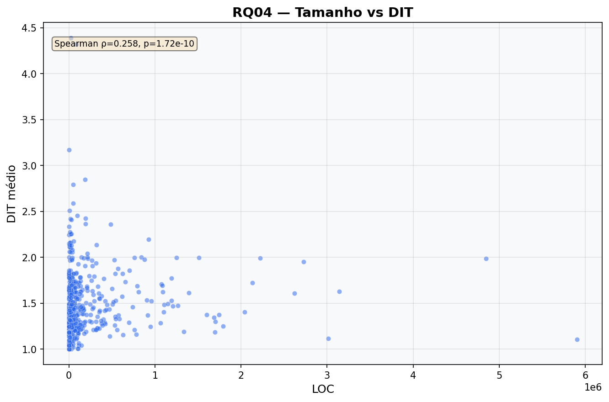
Figura RQ04-B. LOC vs DIT
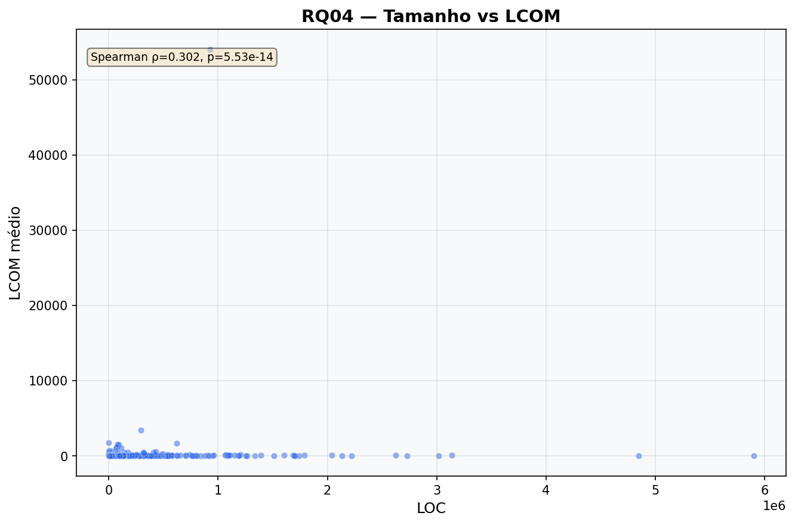
Figura RQ04-C. LOC vs LCOM
Problemas identificados para esta questão: elevação do acoplamento entre classes, dificultando evolução independente de módulos; profundidade excessiva da hierarquia de herança, ampliando custo cognitivo de manutenção; redução de coesão interna, com aumento de classes multifuncionais e maior dívida técnica. Em termos de engenharia, recomenda-se monitoramento contínuo de CK, inspeções de arquitetura e gatilhos de refatoração preventiva em pontos críticos.
Os resultados apontam um padrão recorrente em ecossistemas maduros: à medida que os sistemas crescem em tamanho, idade e volume de evolução, aumenta a probabilidade de erosão arquitetural em níveis distintos (acoplamento, profundidade de herança e coesão). Esse comportamento não significa falha de engenharia em si, mas evidencia que mecanismos de governança arquitetural precisam evoluir na mesma velocidade da entrega de funcionalidades.
Do ponto de vista prático, os principais problemas observáveis são: (i) classes com múltiplas responsabilidades em contextos de aumento de LCOM, (ii) interdependência excessiva entre módulos em cenários de elevação de CBO e (iii) hierarquias de herança profundas que elevam custo de compreensão e de teste em DIT alto.
Em síntese, a análise sugere que pressão de crescimento e manutenção contínua tende a impactar atributos estruturais do software. A reorganização deste relatório por RQ permite rastrear, para cada pergunta, evidência quantitativa, interpretação e implicações técnicas de forma mais aderente ao padrão acadêmico.
Ameaças à validade: o estudo é observacional e restrito ao ecossistema Java analisado. Além disso, as métricas agregadas por média podem suavizar comportamentos extremos de subsistemas específicos.